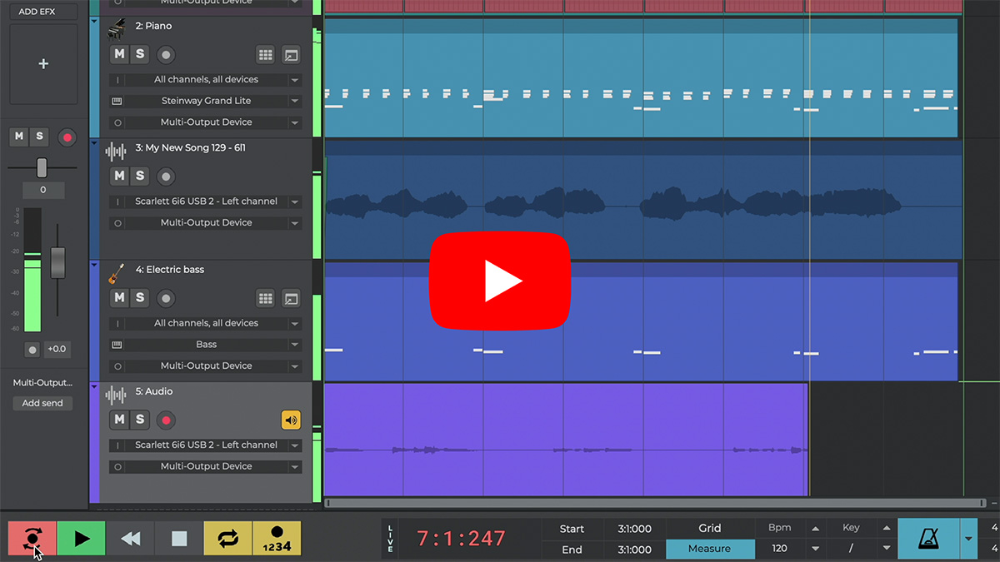
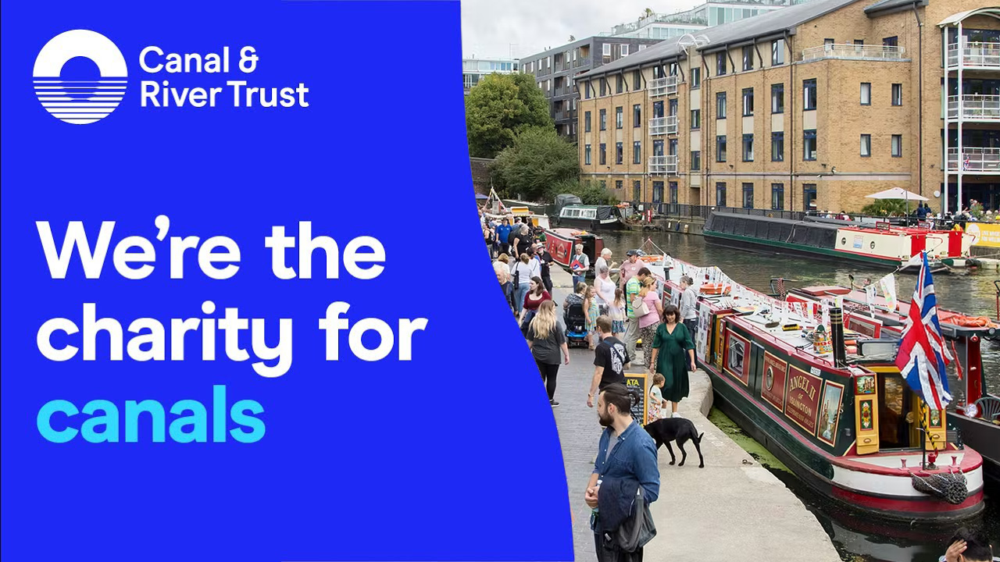
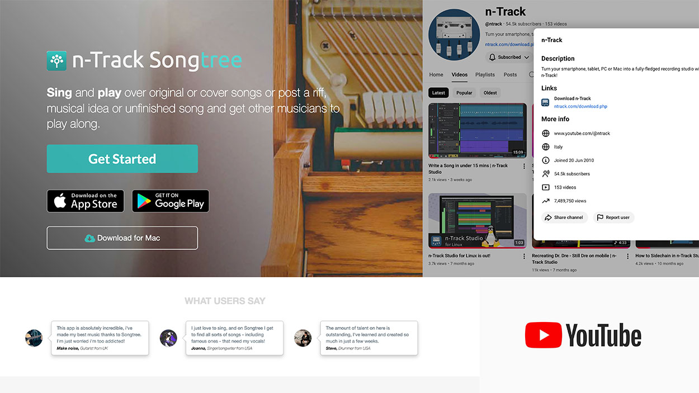

AI-Powered Product Growth & Monetisation (n-Track Studio)
🏆 Winner - Microsoft Store Awards 2025
Owned product strategy for onboarding, monetisation, and subscription packaging for a music creation app with 20M+ downloads, including the launch of a high-value annual plan.

Revenue
+100% in 18 months
Trial → Paid conversions
4x +
Activation
3× key metrics in 3 months
Membership Strategy & New Product Launches (Canal & River Trust)
Helped reposition the membership offering and design a new digital product for a major waterway charity.

Led discovery and analysis across acquisition, onboarding, and renewal journeys.
Defined product strategy and prioritised a roadmap spanning membership and new digital products.
Contributed directly to 3x product income growth in ~18 months.
Community-Driven Growth & Activation
Built and scaled community platforms that doubled as growth and activation surfaces, using real usage data and feedback to inform product prioritisation and onboarding improvements.

Grew Songtree from 0 → 250K users with 1M+ songs posted.
Scaled YouTube community from 2.5K → 55K+ subscribers.
Used community feedback and hands-on testing to identify common friction points and improve activation and long-term engagement
Career highlights
🏆 Microsoft Store Awards 2025:
Product lead for n-Track Studio, winner of the Creativity category.
- 📈 Led product strategy that doubled revenue in 18 months through onboarding, monetisation, and subscription redesign.
- 📊 Ran data-driven experiments across onboarding, trials, and pricing, delivering triple-digit gains in activation and conversion.
- 🚀 Tripled product income at Canal & River Trust by redefining the membership model and launching a new digital product.
- 👥 Built and leveraged creator communities (250K+ users, 55K+ subscribers) as feedback loops to reduce support load and improve retention.